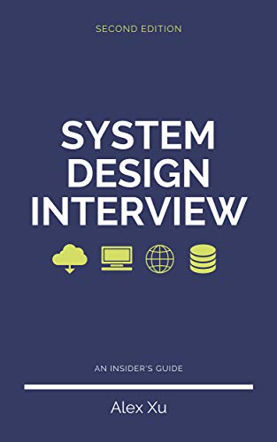

System Design Interview, by Xu
Sunday January 9, 2022
I hadn't done system design interviews before last summer when I interviewed at Google, Uber, Facebook, Robinhood, and a few others. Alex Xu's insider's guide became one of my main prep materials for this interview type. I think it helped.
I was preparing for system design interviews for machine learning engineering positions, and sort of related design questions on ML for data science positions. Xu's book is on more general software engineering, but I thought it was still interesting and valuable. MLE interviews can have "regular" SWE system design components too. For system design content more specific to machine learning, I thought Educative had some decent materials.
I think system design interviews are often trying to evaluate not just abstract or academic knowledge, but experience, thinking, and communication skills. Reading a book like this helps jumpstart and review your knowledge, and is definitely valuable, but is probably not sufficient for a truly outstanding performance. So you could start here, but don't stop!
